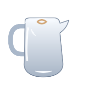
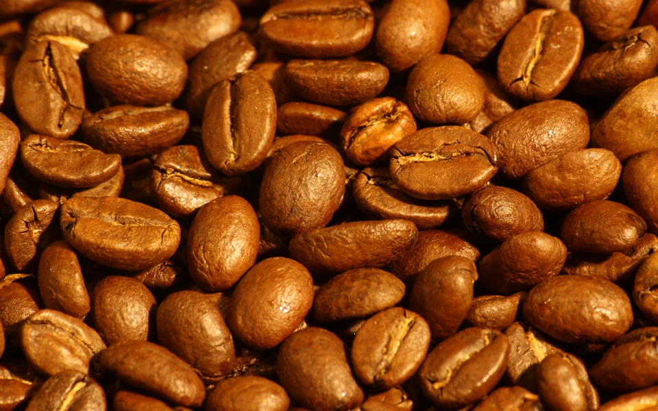

site video
V60 pourcoffee in motion · 5.8 sec
view the clips

peach tea, wild honey & a little jasmine. sip it slow.
60° milk is sweet milk. ask for extra glossy — cocoa on top, always.
seven years in specialty coffee in lalitpur, nepal — espresso, latte art, manual brewing, menus, branding, photos and training.
bar recipe
house espresso · 25s cocoa, plum, brown sugar — 1:2About Me — the art of every cup
I'm Willson Rai, a barista and creative freelancer based in Lalitpur, in the Kathmandu Valley, Nepal. Over seven years in coffee and hospitality I've gone from pulling my first espresso shot to leading teams, training new baristas, and creating visual identities for cafés and restaurants across Kathmandu and Lalitpur.
Beyond the bar I work as a creative freelancer — designing menus, making social media content, shooting drinks and building brand identities. Coffee and creativity run through everything I do.
house dial-in — winter menu
every dial-in gets logged: dose, yield, time, tds and how the cup tasted at the bar. consistency is the job.
design notes — menus & identity
print-ready menu systems, brand identity and social kits for cafés and restaurants across kathmandu and lalitpur — from first sketch to the file the printer actually needs.
work — availability
currently leading the coffee programme for a private venue in lalitpur, and taking a little freelance on the side: menus, identity, drink photography, barista training.
four venues, one valley — jhamel beats, chaasuwa, feels café, and a private venue today.
seven years behind the bar, a cup that tells a story, and the bean that started it all.
Citric & malic salts extract first. High velocity, bright, and sharp — needed for vibrancy, but salty if not balanced.
Caramelized sugars & complex lipids emulsify into the crema. This is the sweet heart of the cup.
Heavy tannins and chlorogenic acids arrive. The craft is cutting the flow exactly as sweetness peaks.
91°C mutes florals; 95°C scorches delicate oils. 93°C delivers sparkling acidity and clean sweetness.
Standard espresso pressure compacts the puck and emulsifies insolubles into a rich, reflective crema.
Sub-micron uniformity prevents micro-channelling and unlocks clean, defined origin clarity.
Steaming unfolds whey proteins without denaturing sugars, creating naturally sweet microfoam.
Glossy wet-paint sheen with bubbles under 0.1mm gives silk mouthfeel and silky latte integration.
High surface tension between microfoam and crema lipids creates sharp, enduring latte art rosettas.
Sensory skill, temperature precision, and the extraction physics behind every cup.
sensory profile: candied plum, roasted cacao nibs, sweet meyer lemon zest, and a lingering wildflower honey finish.
A 25-second extraction, a golden crema, and a story in every sip. watch clips on instagram ↗

Single-origin stories, roasted with intention and ground to order.
Coffee, and coffee again — full ownership of sourcing, dial-in, service standards, menu and training for a private venue.
Alongside specialty barista shifts, I bring an end-to-end creative freelance discipline built specifically for hospitality & coffee brands.
Specialty café and restaurant menus engineered for print, counter boards, and QR web. Balancing flavour hierarchies, ingredient storytelling, and pour margins.
Clean visual identity systems, promotional launch graphics, whole-bean bag packaging, and social assets crafted with a deep aesthetic appreciation for café culture.
On-set beverage styling, glassware curation, lighting choreography, and visual direction. Ensuring every pour, crema layer, and latte art translates with editorial elegance.
Hands-on coffee program consulting: machine calibration, workflow ergonomics for high-volume rushes, espresso sensory standards, and one-on-one barista coaching.
Mount Strada Barista Academy, Kathmandu · 4 months · Sept 2019 – Jan 2020
Hands-on culinary fundamentals and kitchen operations
Professional barista certification — espresso, milk, manual brewing
Free-pour heart, tulip and rosetta, held consistent across shifts
V60 · AeroPress · Chemex — ratios, grind, water temperature, timing
Grand Academy, Kumaripati, Lalitpur · 2019
Gyan Kunj English School, Satdobato, Lalitpur · 2017
Available for café collaborations, menu consulting and professional barista training across Lalitpur and beyond.
rate this site
it goes straight to willson
today